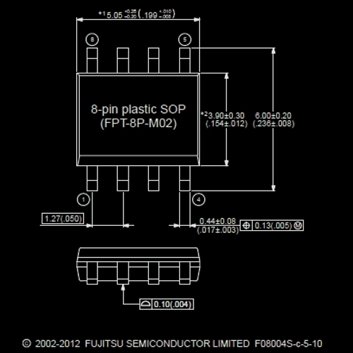
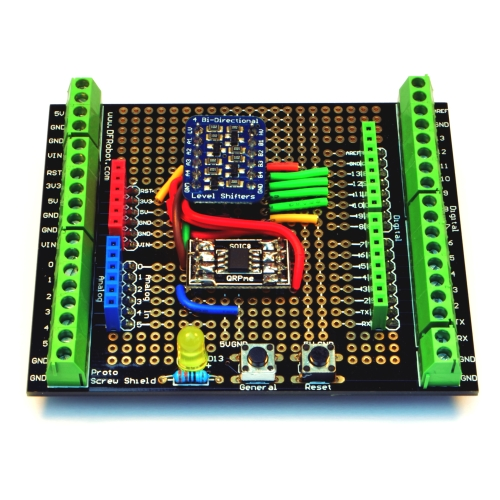
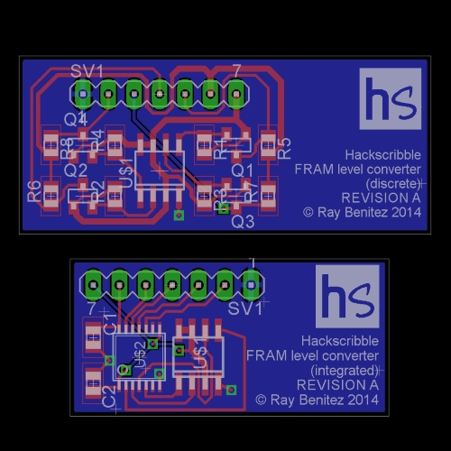

Add fast, versatile, non-volatile ferroelectric memory (FRAM) to your Arduino. Simple hardware interface using SPI bus supports up to 32KB per FRAM chip.
One of the challenges of designing around an Arduino is working within its memory limits. We have a test equipment project in the pipeline which needs to make large numbers of measurements and buffer them before sending them to a controlling PC. So we started to look at the options for adding extra storage. SD card, Flash memory, EEPROM, SRAM - they all have pros and cons. Our choice was Ferroelectric RAM (or "FRAM").
The advantages we saw in FRAM were:
To save on I/O pins, we wanted to use the I2C or SPI bus to connect to the FRAM. We could not track down an addressable I2C FRAM that would co-exist with the other I2C devices already in our project. So we turned to SPI instead and settled on the MB85RS range of FRAM from Fujitsu.
Each MB85RS chip adds up to 32KB of fast, non-volatile storage to the Arduino. You can read more about the MB85RS range and download datasheets from the Fujitsu website.
Building the hardware interface to the FRAM chips was relatively simple. The only complication was translating from the 5V Arduino inputs and outputs to the 3.3V interface of (all but one of) the MB85RS chips. We solved this using an Adafruit level translator breakout, but we are also working on a more compact design to embed in our test equipment project. More on this soon.
The software interface took more time. We could not find an existing Arduino FRAM library, so we wrote our own: Hackscribble Ferro.
We wanted to make it as easy as possible to use the FRAM in our Arduino sketches, hiding much of the detailed management of the FRAM. So we wrote two classes:
In our sketches, we create an instance of Hackscribble_Ferro for each FRAM connected to the Arduino:
#include <Hackscribble_Ferro>
Hackscribble_Ferro myFerro;
ferroResult beginResult = myFerro.begin();
Hackscribble_FerroArray takes care of how the arrays are stored in the FRAM, and provides simple functions to read from and write to them. Most of the time, we only need the methods in this class; we don't use Hackscribble_Ferro methods directly.
We create an array like this (an example of an array of 200 floating point numbers):
ferroResult myResult;
Hackscribble_FerroArray myFloatArray(myFerro, 200, sizeof(float), myResult);
This is how to write the value of a variable called myFloat to the 12th position in this array:
myArray.WriteElement(12, (byte*)&myFloat, myResult);
We have tested this first release of Hackscribble_FerroArray with boolean, char, byte, int, unsigned int, long, unsigned long, float, character array (char [ ]) and user-defined structures (struct).
The great thing about FRAM is that, so long as we don't change how the arrays are defined, each time we run the sketch, the arrays will be stored in the same place in the FRAM. So we can write data into the arrays, switch off the Arduino, run the sketch again some time later and read the same data out of the arrays.
Read the user guide for detailed information on Hackscribble Ferro and how to connect to your FRAM chips.
Download the library, example sketches and user guide.
We are looking at several options to develop Hackscribble Ferro further:
